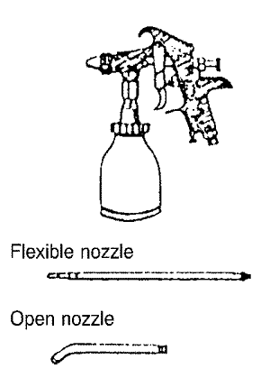
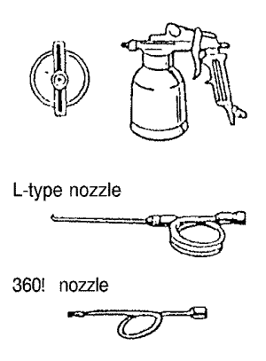
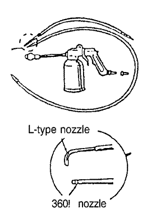
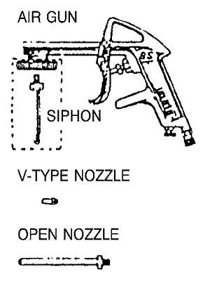
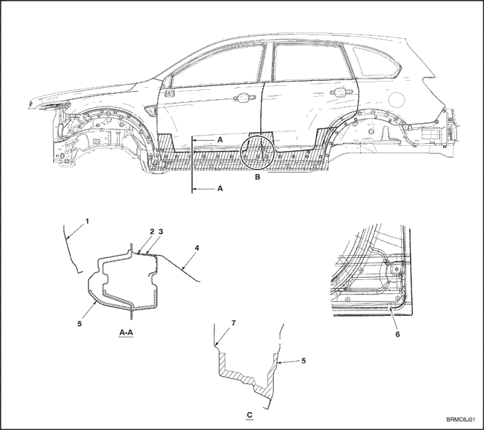
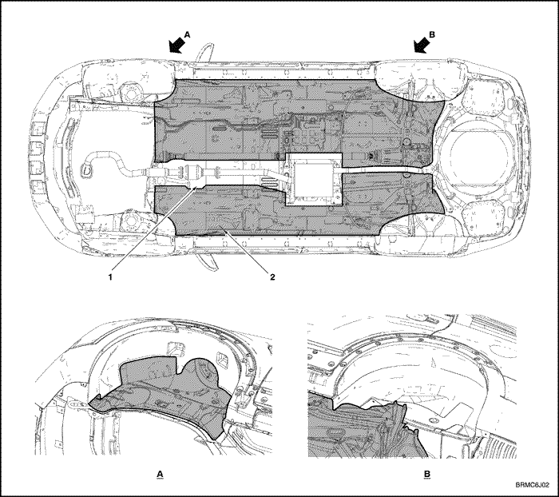
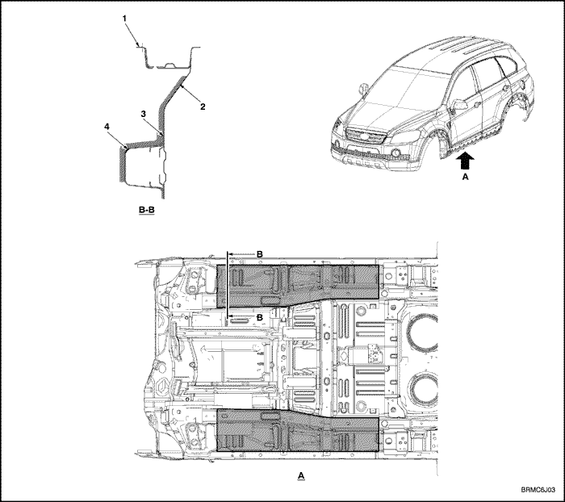
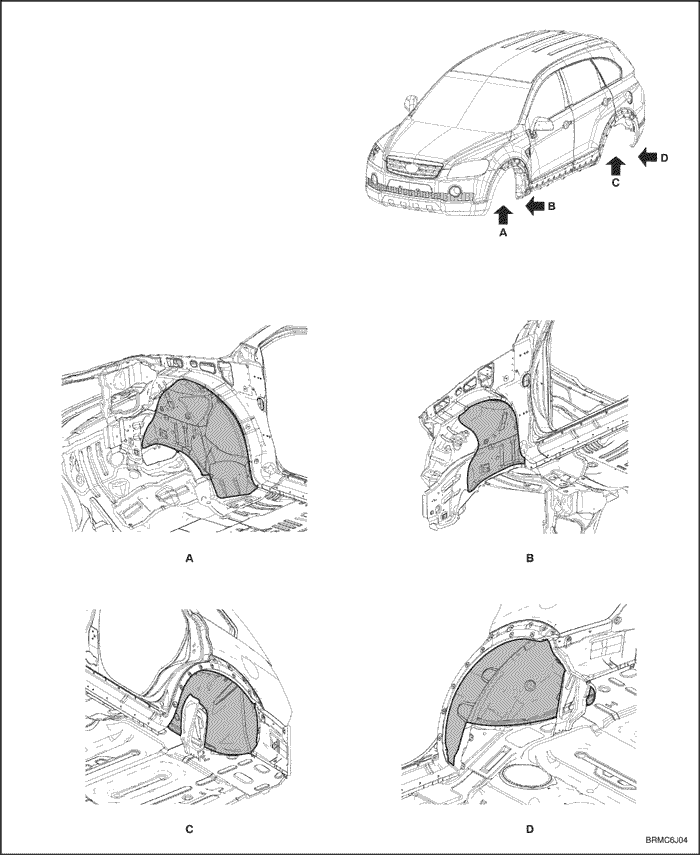

ПРЕДУПРЕЖДЕНИЕ КОРРОЗИИ
РЕМОНТ ОЦИНКОВАННОГО СТАЛЬНОГО ЛИСТА
При
ремонте нового автомобиля избегайте шпаклевания, насколько это
возможно. Всегда, когда возможно, используйте альтернативные методы.
ПРЕДОСТОРОЖНОСТЬ
- Большинство лакокрасочных материалов содержат вредные при вдыхании или проглатывании вещества. Прежде чем открывать емкость с лакокрасочным материалом, прочесть этикетку. Наносите краску только в хорошо вентилируемом месте.
- Пролитую краску засыпать песком или немедленно вытереть.
- При окраске используйте респиратор установленного образца, перчатки, средства защиты глаз и соответствующую одежду. Избегайте контакта с кожей.
- При попадании краски в рот или на кожу тщательно промойте водой. При попадании краски в глаза промойте водой и немедленно обратитесь к врачу.
- Лакокрасочные материалы огнеопасны. Храните их в безопасном месте, берегите от искр и огня, не курите.
|
Операция
|
Инструменты/материалы
|
Процедура
|
ПРИМЕЧАНИЯ
|
|
1. Подготовьте ремонтную зону.
|
Двусторонняя шлифовальная машина, наждачная бумага №80.
|
Зачистите место двусторонней шлифовальной машиной и наждачной бумагой №80. Очистите средством для удаления воска и смазки.
|
.
|
|
2. Нанесите шпаклевку
Примечание: Шпаклевку наносят после грунтования, как описано в шаге 4.
|
Эпоксидная шпаклевка.
|
При необходимости наносите в несколько тонких слоев. Старайтесь не оставлять пор в слое шпаклевки.
|
.
|
|
3. Зашлифуйте и очистите область, которую нужно зашпаклевать.
|
Двусторонняя
шлифовальная машина, плоскошлифовальная машина, ручной напильник,
наждачная бумага №80, №120, №240, средство для удаления воска и смазки,
технические салфетки.
|
Грубо
зачистить место двусторонней шлифовальной машиной и наждачной бумагой
№80, затем зашлифовать наждачной бумагой №120. Заполируйте наждачной
бумагой №240. Очистите средством для удаления воска и смазки.
|
.
|
|
4. Нанесите грунтовку.
Примечание: Загрунтуйте чистый металл и зашпаклеванную область.
|
Эпоксидная грунтовка и отвердитель, эпоксидный разбавитель.
|
Нанесите 2-4 слоя, давая достаточно времени для высыхания каждого слоя.
Принудительно высушить при 60-70∞C (140-158∞F) в течение не менее чем 30 минут.
|
Наносите до толщины слоя 30-35 микрон.
|
|
5. Зашлифуйте и очистите всю область.
|
Двусторонняя шлифовальная машина, наждачная бумага №400, средство для удаления воска и смазки, технические салфетки.
|
Зашлифуйте все перекрашиваемое место двусторонней шлифовальной машиной и наждачной бумагой №400.
Продуйте сжатым воздухом. Очистите средством для удаления воска и смазки.
|
.
|
|
6. Покрыть всю перекрашиваемую область грунтовкой/грунт-шпаклевкой.
|
Грунтовка/грунт-шпаклевка на основе полиэфирной/уретановой смолы.
|
Нанесите 2-4 слоя, давая достаточно времени для высыхания каждого слоя.
Принудительно высушить при 60-70∞C (140-158∞F) в течение не менее чем 30 минут.
|
Наносите до толщины слоя 30-35 микрон.
|
|
7. Зачистите и очистите все перекрашиваемое место.
|
Ручной
напильник, двусторонняя шлифовальная машина, наждачная бумага №240,
№320, №400, №600, средство для удаления воска и смазки, технические
салфетки.
|
Зашлифуйте
ремонтируемое место вручную наждачной бумагой №240, пока оно не станет
ровным. Зашлифовать все перекрашиваемое место двусторонней шлифовальной
машиной и наждачной бумагой №320- 600.
Очистите средством для удаления воска и смазки.
|
.
|
|
8. Нанесите поверхностное покрытие на все перекрашиваемое место.
|
Поверхностное покрытие на основе акрил-уретановой смолы, отвердитель, разбавитель.
|
Нанесите 2-4 слоя, давая достаточно времени для высыхания каждого слоя.
Принудительно высушить при 60-70∞C (140-158∞F) в течение не менее чем 30 минут.
|
Наносите до толщины слоя 40-50 микрон.
|
ПРОЦЕДУРЫ ПРЕДУПРЕЖДЕНИЯ КОРРОЗИИ
ОБЩАЯ ИНФОРМАЦИЯ
- Если предстоит обработать значительное количество автомобилей, рекомендуется использовать пневматический распылитель.
- Для удаления пролитых антикоррозионных средств пользуйтесь уайт-спиритом и тряпкой.
- Перед нанесением антикоррозионного средства тщательно очистите места, на которые наносится покрытие, с помощью пароочистителя или аналогичного устройства, и дайте высохнуть.
-
Примечание: Waxoyl можно наносить на влажную поверхность.
- Наносите антикоррозионное средство до тех пор, пока оно не начнет вытекать, например, при заполнении дверей и т.п. Сотрите избыток средства чистой тряпкой, смоченной уайт-спиритом.
- Не наносите антикоррозионное средство на тормозные шланги, тормозные диски, тормозные барабаны, глушитель и связанные с ним части, устройства для снижения токсичности выхлопа в моторном отсеке, крышки шаровых шарниров и т.п. Пролитое антикоррозионное средство вытирайте сразу же.
- Если температура окружающего воздуха ниже 10∞C (50∞F), нагреть антикоррозионное средство до комнатной температуры [36.5∞C (97.7∞F)], погрузив емкость в горячую воду.
- При нанесении антикоррозионного средства обеспечить вентиляцию, поскольку оно содержит небольшое количество органического растворителя. Берегитесь искр, открытого пламени и сигарет.
Коррозия
начинается сразу же, как только поверхность стали приходит в контакт с
атмосферой. Ситуация ухудшается при воздействии морского ветра, дорожной
соли, дождя, снега и промышленных осадков. Существует множество
способов защиты автомобилей от коррозии. Для защиты кузова автомобиля
его покрывают грунтовками, грунтовочными покрытиями и красками, которые
наносят электрораспылителем или пульверизатором.
Антикоррозионные средства и краскораспылители
При ремонте кузова используйте следующие антикоррозионные средства или их аналоги.
Внимание!
АНТИКОРРОЗИОННЫЕ средства содержат вещества, вредные при вдыхании,
проглатывании или попадании на кожу. При работе с подобными средствами
используйте комбинезон, перчатки, средства защиты глаз и респиратор
установленного образца.
Антикоррозионные средства
|
RUSTOP
DEOX #100
WAXOYL
|
АМЕРИКАНСКИЙ РЫНОК
AUTO ARMOR 1031
(производитель E.C.P)
|
Наносится на сварные соединения
внутри панелей кузова.
|
|
NOX-RUST 409-20S
SOLTION 1000S
|
AUTO ARMOR OUTSIDE COATING
(производитель E.C.P)
|
Наносится на нижнюю сторону пола
и колесной арки.
|
Распылители:
Используйте распылитель, соответствующий используемому средству.
|
Для RUSTOP
|
DEOX #100
|
Для WAXOYL
|
Для NOXRUST 409-20S / SOLTION 1000S
|
|
  
|
 
|
 
|
 
|
|
Защитные средства: Используйте перчатки, маску и соответствующие средства защиты глаз.
|
|||
Меры предосторожности:
Внимание! Оставшееся антикоррозионное средство затвердеет в каналах распылителя, и он придет в негодность.
УЧАСТКИ С АНТИКОРРОЗИОННЫМ ПОКРЫТИЕМ
- Толщина покрытия: 0,05 мм (0,002 in.)
- Штриховкой показаны области нанесения антикоррозионного средства.
- При ремонте или полировке лакокрасочного покрытия следовать приведенной ниже схеме.
- Боковая наружная панель передней двери
- Центральное скрепление внутренней панели порога
- Внутренняя панель порога
- Панель пола
- Наружная панель боковины кузова
- Не закрывать воском сливные отверстия для воды на обеих дверях (3 места).
- Боковая внутренняя панель двери
- C. Типовой разрез для обеих дверей.
- На каталитическом нейтрализаторе отработавшего газа (или корпусе сажевого фильтра для дизеля) и кислородном датчике абсолютно не должно быть воска.
- Покрытие должно наноситься на все поверхности или всю нижнюю часть кузова.
Примечание:





СХЕМА НАНЕСЕНИЯ ГРУНТОВОЧНОГО ПОКРЫТИЯ
- Толщина покрытия: не менее 0,5 мм (0,020 in.).
- Штриховкой показаны области нанесения антикоррозионного средства.
- При ремонте или полировке лакокрасочного покрытия следовать приведенной ниже схеме.
- Не наносить на области крепления деталей и отверстия.
- Внутренняя панель порога
- Панель пола
- Усилитель задней наружной части лонжерона переднего отсека
- Задний лонжерон внутренней части переднего отсека
Примечание:


